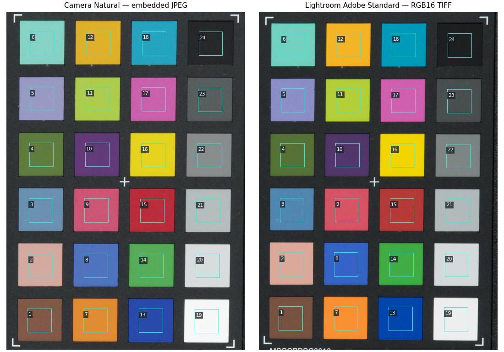

핵심 요약
- K-3 II로 찍은 공개 RAW 한 장(색상표가 찍힌 장면)을 실제 Lightroom Classic 15.6에서 세 가지 프로파일로 현상했습니다. 프로파일마다 sRGB와 ProPhoto RGB로 내보내 16비트 TIFF 6개를 얻었습니다.
- 같은 RAW 파일에 들어 있는 카메라 Natural JPEG와 색 패치 24개를 비교했습니다. 두 출력 색공간 모두 Camera Natural이 가장 가까웠습니다. sRGB 기준 평균 색차(ΔE00)는 Camera Natural 1.615, 시험 DCP 3.073, Adobe Standard 3.476입니다.
- sRGB TIFF에서 채도가 높은 패치의 채널 값이 0에 붙는 현상은 대부분 sRGB로 옮기는 변환에서 생깁니다. ProPhoto RGB TIFF에는 이런 값이 없고, 이를 sRGB로 다시 변환하면 같은 위치에서 재현됩니다.
- 장면 한 장에서 잰 값입니다. 프로파일이 Lightroom 출력에 반영되는지 확인한 것이며, 카메라의 색 모드를 재현했다는 뜻이 아닙니다.
확인 Lightroom 출력을 실제로 측정
- TIFF 6개의 프로파일 이름과 지문, 현상 설정 114개를 파일 안 XMP에서 읽어 대조
- 패치 24개의 색차와 중립 패치의 밝기 차이
- ProPhoto RGB를 sRGB로 다시 변환해 끝값 위치를 대조
- JPEG와 TIFF, TIFF끼리의 위치 맞춤 오차
모델 연구자가 정한 조건
- 시험 DCP에는 DNG에 들어 있던 색 행렬과 광원 태그만 넣음
- 현상 설정 고정: Process Version 15.4, 노출 0, 자르기·렌즈 보정 없음
- ICC가 없는 내장 JPEG를 DNG 태그에 따라 sRGB로 해석
- 패치 중앙 200×200픽셀의 중앙값으로 비교
미확인 이 측정으로 알 수 없는 것
- 다른 장면·조명·노출에서의 결과
- 차트 실물의 절대 색 정확도
- 분석 대상 펌웨어 1.12로 찍은 RAW에서의 결과(표본은 1.10)
- Lightroom 내부 처리와 카메라 내부 처리의 전체 순서
배경: 무엇을 무엇과 비교했는가
이 연구의 목표는 Lightroom에서 RAW를 열었을 때 카메라가 직접 만든 JPEG와 비슷한 색이 나오는 프로파일을 만드는 것입니다. 그러려면 먼저 지금 쓸 수 있는 프로파일이 카메라 JPEG에서 얼마나 떨어져 있는지 알아야 합니다. 이 문서는 그 출발점이 되는 기준선을 잽니다.
표본은 raw.pixls.us에 공개된 K-3 II의 DNG #1376입니다. DNG 파일에는 센서 데이터와 함께 카메라가 촬영 순간에 현상해 둔 JPEG(내장 미리보기)가 들어 있습니다. 이 사진은 Custom Image를 Natural로 두고 찍었으므로, 내장 JPEG는 같은 노출과 같은 조명에서 카메라가 낸 Natural 색입니다. 표본의 출처와 내장 JPEG를 꺼내는 방법은 시험용 RAW 준비에 있습니다.
- 주어진 자료와 Adobe 프로파일
- 이 연구에서 만든 시험 DCP
- PC에서 실제로 측정한 것
| 프로파일 | 만든 곳 | 성격 |
|---|---|---|
| Adobe Standard | Adobe (Lightroom에 포함) | 기종마다 같은 인상을 내도록 만든 Adobe의 기준 프로파일입니다. |
| Camera Natural | Adobe (Lightroom에 포함) | 카메라의 Natural 설정을 흉내 내도록 만든 Camera Matching 프로파일입니다. |
| 시험 DCP PENTAX RAW matrix test 1376 | 이 연구 | DNG 파일에 카메라가 기록해 둔 색 행렬 두 개와 광원 태그만 옮겨 담았습니다. 색을 다듬는 LookTable과 톤 곡선은 없습니다. 직접 만든 프로파일이 Lightroom에 실제로 적용되는지 보려는 용도입니다. |
ΔE00(CIEDE2000)은 두 색이 사람 눈에 얼마나 다르게 보이는지를 하나의 숫자로 나타내는 국제 표준 계산식입니다. 0이면 같은 색이고 숫자가 클수록 다릅니다. 이 문서에서는 패치마다 카메라 JPEG의 색과 Lightroom TIFF의 색 사이 ΔE00을 구했습니다. 계산 절차는 ColorChecker 비교 절차에 정리했습니다.
결과: Camera Natural이 내장 JPEG에 가장 가깝습니다
Camera Natural의 평균 색차는 약 1.6으로, 나머지 두 프로파일(약 3.1~3.6)의 절반 수준이었습니다. 출력 색공간을 바꿔도 순서는 같았습니다.
- Adobe가 제공한 프로파일
- 이 연구에서 만든 시험 DCP
| Lightroom 프로파일 | 출력 색공간 | 평균 | 중앙값 | 90백분위 | 최댓값 | 최댓값이 나온 패치 |
|---|---|---|---|---|---|---|
| Adobe Standard | sRGB | 3.476 | 3.131 | 5.130 | 5.822 | 8 purplish blue |
| ProPhoto RGB | 3.640 | 3.370 | 5.365 | 6.216 | 18 cyan | |
| Camera Natural | sRGB | 1.615 | 1.532 | 2.297 | 3.295 | 19 white |
| ProPhoto RGB | 1.620 | 1.528 | 2.294 | 3.301 | 19 white | |
| 시험 DCP | sRGB | 3.073 | 3.184 | 4.741 | 5.035 | 23 neutral 3.5 |
| ProPhoto RGB | 3.088 | 3.192 | 4.824 | 5.048 | 23 neutral 3.5 |
값은 lightroom-render-comparison.json의 패치별 색차에서 다시 계산했습니다. 90백분위는 선형 보간 방식입니다.
시험 DCP와 Adobe Standard의 차이
시험 DCP는 Lightroom 화면에서 직접 선택했고, 내보낸 TIFF의 CameraProfile과 CameraProfileDigest에서도 이 프로파일이 쓰였음을 확인했습니다. 이 표본의 sRGB 출력에서 시험 DCP의 평균(3.073)과 90백분위(4.741)는 Adobe Standard(3.476, 5.130)보다 낮았습니다. 중앙값은 0.053 높았습니다.
이 차이는 직접 만든 프로파일을 불러와 출력한 파일에서 잰 값입니다. 시험 DCP가 Adobe Standard보다 “더 정확하다”는 뜻이 아닙니다. 시험 DCP에는 카메라 색 모드에 맞춘 보정이 들어 있지 않습니다. 프로파일을 바꾸면 출력이 달라진다는 사실, 다시 말해 조작이 결과에 반영된다는 사실까지 확인한 것입니다.
패치 24개 중 20개에서 Camera Natural이 가장 가깝습니다
Camera Natural은 색이 있는 패치 대부분에서 가장 가까웠습니다. 남은 차이 가운데 가장 큰 것은 흰색 패치의 밝기입니다.
- Adobe가 제공한 프로파일
- 이 연구에서 만든 시험 DCP
세로 파선은 그 프로파일의 24개 패치 평균입니다. 가로 점선 아래 19~24번은 흰색에서 검정까지의 중립(무채색) 패치입니다. 패치 이름은 ColorChecker Classic의 관용 영문 이름입니다.
- Camera Natural이 가장 가깝지 않은 패치는 네 개입니다. 6번 bluish green과 20번·21번 중립 패치는 시험 DCP가, 19번 흰색은 Adobe Standard가 더 가까웠습니다. ProPhoto RGB 출력에서도 같습니다.
- Camera Natural의 가장 큰 차이는 19번 흰색입니다. ΔE00은 3.295이고, Lightroom 출력의 밝기 L*가 내장 JPEG보다 5.376 낮았습니다.
- 중립 패치 여섯 개는 세 프로파일 모두에서 Lightroom 쪽이 더 어둡습니다(ΔL*가 모두 음수). 색을 맞추더라도 밝기 곡선의 차이가 따로 남는다는 뜻입니다.
| 패치 | sRGB TIFF | ProPhoto RGB TIFF | ||||
|---|---|---|---|---|---|---|
| Adobe Standard | Camera Natural | 시험 DCP | Adobe Standard | Camera Natural | 시험 DCP | |
| 1 dark skin | 2.962 | 1.431 | 4.066 | 2.980 | 1.444 | 4.081 |
| 2 light skin | 3.137 | 0.786 | 1.975 | 3.142 | 0.795 | 1.969 |
| 3 blue sky | 5.135 | 0.827 | 3.419 | 5.146 | 0.831 | 3.426 |
| 4 foliage | 4.012 | 1.036 | 4.021 | 4.028 | 1.050 | 4.036 |
| 5 blue flower | 4.930 | 0.883 | 2.043 | 4.936 | 0.894 | 2.049 |
| 6 bluish green | 3.000 | 2.378 | 1.149 | 3.015 | 2.370 | 1.147 |
| 7 orange | 4.706 | 1.846 | 5.029 | 4.695 | 1.835 | 5.021 |
| 8 purplish blue | 5.822 | 1.971 | 4.748 | 5.837 | 1.989 | 4.764 |
| 9 moderate red | 5.451 | 0.946 | 3.375 | 5.459 | 0.951 | 3.383 |
| 10 purple | 4.093 | 1.979 | 3.975 | 4.102 | 1.990 | 3.988 |
| 11 yellow green | 2.927 | 1.502 | 1.894 | 2.923 | 1.502 | 1.909 |
| 12 orange yellow | 4.666 | 1.798 | 4.619 | 4.653 | 1.789 | 4.608 |
| 13 blue | 2.769 | 2.100 | 4.726 | 3.200 | 2.117 | 4.849 |
| 14 green | 3.125 | 1.218 | 2.214 | 3.136 | 1.216 | 2.224 |
| 15 red | 3.779 | 1.081 | 2.034 | 3.788 | 1.090 | 2.045 |
| 16 yellow | 3.123 | 1.562 | 2.718 | 3.286 | 1.554 | 2.832 |
| 17 magenta | 1.236 | 0.985 | 2.994 | 1.230 | 0.995 | 3.001 |
| 18 cyan | 3.020 | 1.458 | 3.442 | 6.216 | 1.466 | 3.425 |
| 19 white | 2.174 | 3.295 | 2.238 | 2.177 | 3.301 | 2.245 |
| 20 neutral 8 | 1.021 | 2.107 | 0.990 | 1.026 | 2.111 | 0.998 |
| 21 neutral 6.5 | 1.068 | 1.646 | 0.910 | 1.065 | 1.640 | 0.902 |
| 22 neutral 5 | 3.440 | 1.452 | 3.429 | 3.453 | 1.459 | 3.444 |
| 23 neutral 3.5 | 5.117 | 2.494 | 5.035 | 5.130 | 2.507 | 5.048 |
| 24 black | 2.714 | 1.980 | 2.717 | 2.726 | 1.992 | 2.728 |
ProPhoto RGB 열은 ProPhoto RGB TIFF를 Lab으로 바꿔 내장 JPEG와 직접 비교한 값입니다. 18번 cyan의 Adobe Standard 값이 두 색공간에서 크게 다른 이유는 다음 절에서 설명합니다.
중립 패치 19~24번의 밝기 차이(ΔL*)와 색차
| 패치 | 내장 JPEG의 L* | Adobe Standard | Camera Natural | 시험 DCP | |||
|---|---|---|---|---|---|---|---|
| ΔL* | ΔE00 | ΔL* | ΔE00 | ΔL* | ΔE00 | ||
| 19 white | 97.75 | -3.627 | 2.174 | -5.376 | 3.295 | -3.636 | 2.238 |
| 20 neutral 8 | 88.00 | -1.581 | 1.021 | -3.241 | 2.107 | -1.514 | 0.990 |
| 21 neutral 6.5 | 76.24 | -1.215 | 1.068 | -1.955 | 1.646 | -1.045 | 0.910 |
| 22 neutral 5 | 58.66 | -3.662 | 3.440 | -1.488 | 1.452 | -3.595 | 3.429 |
| 23 neutral 3.5 | 39.56 | -6.046 | 5.117 | -2.867 | 2.494 | -5.966 | 5.035 |
| 24 black | 16.35 | -4.155 | 2.714 | -3.011 | 1.980 | -4.160 | 2.717 |
| 프로파일 | 평균 | 중앙값 | 최댓값 | 최댓값이 나온 패치 |
|---|---|---|---|---|
| Adobe Standard | 2.589 | 2.444 | 5.117 | 23 neutral 3.5 |
| Camera Natural | 2.162 | 2.043 | 3.295 | 19 white |
| 시험 DCP | 2.553 | 2.477 | 5.035 | 23 neutral 3.5 |
모든 패치의 Lab 중앙값과 ΔL*·Δa*·Δb*는 lightroom-render-comparison.json의 baseline.renders[].patches에 있습니다.
sRGB TIFF의 끝값은 출력 색공간 변환에서 생깁니다
sRGB TIFF에서 일부 패치의 R 또는 B 값이 0에 붙어 있었습니다. 같은 현상을 ProPhoto RGB TIFF에서 sRGB로 다시 변환해 재현했으므로, 원인은 대부분 좁은 색공간으로 옮기는 변환입니다.
sRGB는 담을 수 있는 색의 범위가 좁습니다. 채도가 아주 높은 색을 sRGB로 옮기려면 한 채널이 0보다 작아져야 하는데, 파일에는 0 미만을 쓸 수 없어 0으로 잘립니다. ProPhoto RGB는 범위가 훨씬 넓어 같은 색을 잘리지 않게 담습니다. 그래서 같은 현상 결과를 두 색공간으로 내보내 비교하면, 잘림이 현상 단계에서 생겼는지 출력 변환에서 생겼는지 가려낼 수 있습니다.
먼저 세 ProPhoto RGB TIFF의 패치 영역에는 코드 0이나 65535가 하나도 없었습니다. 다음으로 그 TIFF를 원래 sRGB TIFF에 들어 있던 ICC 프로파일로 다시 변환했습니다. 아래 표처럼 0이 된 픽셀 대부분이 원래 sRGB TIFF와 같은 위치에 나타났습니다. 집계 대상은 TIFF마다 패치 24개의 측정 영역 960,000픽셀입니다.
| 프로파일 | 원래 sRGB에서 R=0 / B=0인 픽셀 | 재변환에서도 같은 위치인 픽셀 | 재변환 sRGB와 원래 sRGB의 최대 ΔE00 | ProPhoto RGB와 원래 sRGB의 최대 ΔE00 |
|---|---|---|---|---|
| Adobe Standard | 78,061 / 39,964 | 78,055 / 39,964 | 0.03311 | 4.79469 |
| Camera Natural | 9 / 6 | 9 / 6 | 0.03057 | 0.03057 |
| 시험 DCP | 48,663 / 38,648 | 48,641 / 38,648 | 0.03266 | 0.41459 |
- 끝값은 프로파일마다 네 개 이하의 패치에 몰려 있습니다. Adobe Standard에서는 18번 cyan의 측정 영역 40,000픽셀 전체와 13번 blue의 38,061픽셀에서 R이 0이었고, 16번 yellow의 39,964픽셀에서 B가 0이었습니다.
- 밝은 쪽 끝값은 Adobe Standard에만 있습니다. 7번 orange에서 R=65535인 픽셀이 41개였고, 그중 37개가 재변환에서 같은 위치에 나타났습니다.
- Camera Natural에는 끝값이 거의 없습니다. R=0이 9개, B=0이 6개뿐입니다.
- 끝값은 색차 숫자에도 영향을 줍니다. Adobe Standard의 18번 cyan은 sRGB TIFF에서 ΔE00 3.020이지만 ProPhoto RGB TIFF에서는 6.216입니다. sRGB 값은 채널이 0으로 잘린 뒤의 색으로 잰 것입니다.
이 대조로 Adobe Standard와 시험 DCP의 sRGB 끝값 대부분을 출력 색공간 변환으로 설명할 수 있습니다. 다만 카메라 JPEG가 인코딩되기 전의 색이나 Lightroom 내부 처리 전체를 이 측정으로 복원할 수는 없습니다.
패치별 끝값 개수와 선형 sRGB 값
| 프로파일 | 패치 | 끝값 | 원래 sRGB | 재변환 (-c0) | 같은 위치 | 전달 곡선 전 선형 값의 극값 | ProPhoto RGB와 원래 sRGB의 ΔE00 |
|---|---|---|---|---|---|---|---|
| Adobe Standard | 7 orange | R = 65535 | 41 | 37 | 37 | +1.0336 | 0.017 |
| Adobe Standard | 13 blue | R = 0 | 38,061 | 38,060 | 38,055 | -0.0110 | 0.506 |
| Adobe Standard | 16 yellow | B = 0 | 39,964 | 39,965 | 39,964 | -0.0180 | 0.539 |
| Adobe Standard | 18 cyan | R = 0 | 40,000 | 40,000 | 40,000 | -0.0899 | 4.795 |
| Camera Natural | 16 yellow | B = 0 | 6 | 7 | 6 | -0.0027 | 0.017 |
| Camera Natural | 18 cyan | R = 0 | 9 | 9 | 9 | -0.0023 | 0.013 |
| 시험 DCP | 12 orange yellow | B = 0 | 1,731 | 1,860 | 1,731 | -0.0088 | 0.017 |
| 시험 DCP | 13 blue | R = 0 | 33,176 | 33,155 | 33,154 | -0.0116 | 0.384 |
| 시험 DCP | 16 yellow | B = 0 | 36,917 | 37,078 | 36,917 | -0.0235 | 0.415 |
| 시험 DCP | 18 cyan | R = 0 | 15,487 | 15,716 | 15,487 | -0.0233 | 0.106 |
“선형 값의 극값”은 ProPhoto RGB TIFF의 Lab 값에 sRGB ICC의 색도 행렬을 거꾸로 적용해 얻은, 전달 곡선을 적용하기 전의 선형 sRGB 값입니다. 끝값 0에는 영역 안 최솟값을, 65535에는 최댓값을 적었습니다. 0보다 작거나 1보다 크면 sRGB로 표현할 수 없는 색입니다.
재변환 방법에 따른 R=0 / B=0 개수
| 프로파일 | 원래 sRGB TIFF | 재변환, 사전 계산 끔 (-c0) | 재변환, 기본 사전 계산 (-c1) | 선형 값이 0 미만 | 그중 원래와 같은 위치 |
|---|---|---|---|---|---|
| Adobe Standard | 78,061 / 39,964 | 78,060 / 39,965 | 40,026 / 7,420 | 78,044 / 39,964 | 78,041 / 39,964 |
| Camera Natural | 9 / 6 | 9 / 7 | 0 / 2 | 9 / 7 | 9 / 6 |
| 시험 DCP | 48,663 / 38,648 | 48,871 / 38,938 | 4,242 / 13,170 | 48,812 / 38,923 | 48,604 / 38,648 |
LittleCMS의 변환 도구 tificc는 기본값(-c1)에서 변환표를 미리 계산해 보간합니다. 이 방식에서는 0이 되는 픽셀이 훨씬 적게 나와 원래 TIFF와 맞지 않았습니다. 그래서 사전 계산을 끈 -c0 결과를 주된 비교에 썼습니다. 오른쪽 두 열은 변환 도구를 쓰지 않고 선형 sRGB 값을 직접 계산한 독립 확인입니다. Adobe Standard의 R=65535는 선형 값이 1을 넘는 픽셀 37개와 대응했고, 모두 원래 TIFF의 41개 안에 있었습니다.
| 프로파일 | 중앙값 | 90백분위 | 99백분위 | 최댓값 | 최대 위치 차이(픽셀) |
|---|---|---|---|---|---|
| Adobe Standard | 11 / 7 / 13 | 21 / 11 / 25 | 43 / 15 / 37 | 53 / 17 / 127 | 0.163 |
| Camera Natural | 12 / 7 / 14 | 20 / 11 / 23 | 39 / 14 / 48 | 102 / 17 / 109 | 0.136 |
| 시험 DCP | 12 / 7 / 13 | 22 / 11 / 23 | 68 / 15 / 77 | 113 / 18 / 129 | 0.167 |
코드 차이에는 색 관리 모듈의 계산 방식과 양자화, 내보내기 과정의 처리 차이가 섞여 있을 수 있습니다.
현상 조건을 고정하고 사진 위치를 맞춘 방법
여섯 TIFF는 프로파일과 출력 색공간만 다릅니다. 측정 영역은 JPEG와 TIFF의 차트 위치를 3픽셀 안쪽으로 맞춘 뒤 정했습니다.
- 입력 고정같은 RAW의 Natural 내장 JPEG와 Lightroom RGB16 TIFF 6개
- 차트 위치 맞춤모서리 4곳으로 맞추고 따로 둔 교차점 15곳으로 검사
- D50 Lab 변환TIFF는 포함된 ICC, JPEG는 sRGB. 상대 색도계, 흑점 보정 끔
- 패치별 색차L*·a*·b* 중앙값, CIEDE2000, RGB 끝값 집계
현상 조건
Lightroom의 같은 가상 사본에서 프로파일과 출력 색공간만 바꿔 가며 내보냈습니다. 내보낸 TIFF 안의 XMP에는 현상 속성이 114개 기록됩니다. 같은 프로파일의 sRGB TIFF와 ProPhoto RGB TIFF 사이에는 속성과 중첩 요소의 차이가 없었습니다. 프로파일 사이에서 달라진 속성은 아래 표의 마지막 열이 전부입니다.
| 프로파일 이름 | CameraProfileDigest | As Shot 온도 | Tint | Adobe Standard와 다른 속성 |
|---|---|---|---|---|
| Adobe Standard | 60AC1A2E4B4616A5F94860B8586E09F4 | 5300 K | −2 | 기준 |
| Camera Natural | 67653F62730129864ADC9A1E8C76BDF0 | 5300 K | −2 | CameraProfile, CameraProfileDigest |
| PENTAX RAW matrix test 1376 | 1C7CF75BBFB3AA224BCEB9DAF7FBBBC9 | 5200 K | +2 | CameraProfile, CameraProfileDigest, Temperature, Tint |
공통 설정은 Process Version 15.4, 화이트밸런스 As Shot, 현상 노출 0, 자르기 없음, 렌즈 프로파일 보정과 자동 색수차 제거 끔입니다. 6016×4000 RGB16 TIFF로 내보내면서 크기 변경과 출력 샤프닝을 껐습니다. 그래도 Lightroom의 기본 캡처 샤프닝 40과 색 노이즈 감소 25는 현상 값에 남아 있습니다.
카메라에 설정된 색온도는 5000 K입니다(MakerNote). Lightroom에서 As Shot을 그대로 두면 Adobe 프로파일 두 개에서는 5300 K·Tint −2로, 시험 DCP에서는 5200 K·Tint +2로 표시됐습니다. DNG 규격은 카메라가 기록한 중립값을 색도 좌표로 바꿀 때 프로파일의 색 행렬을 쓰도록 정하므로, 프로파일이 바뀌면 환산된 숫자도 달라질 수 있습니다. 세 프로파일에서 실제 백색점이 같았는지는 따로 측정해야 합니다. 촬영 때의 노출 보정 −0.7 EV와 Lightroom의 현상 노출 0도 서로 다른 값입니다.
현상 설정과 카메라 쪽 촬영 설정 전체
Lightroom 현상 설정(여섯 TIFF 공통, 온도와 Tint 제외):
ProcessVersion- 15.4
WhiteBalance- As Shot
Exposure2012- 0.00
Contrast2012- 0
Highlights2012- 0
Shadows2012- 0
Whites2012- 0
Blacks2012- 0
HasCrop- False
CropTop- 0
CropLeft- 0
CropBottom- 1
CropRight- 1
CropAngle- 0
LensProfileEnable- 0
AutoLateralCA- 0
Sharpness- 40
SharpenRadius- +1.0
SharpenDetail- 25
SharpenEdgeMasking- 0
LuminanceSmoothing- 0
ColorNoiseReduction- 25
DNG에서 읽은 카메라 쪽 설정(ExifTool 표기):
SubIFD1:PreviewColorSpace- sRGB
IFD0:PreviewColorSpace- sRGB
Pentax:ImageTone- Natural
ExifIFD:WhiteBalance- Manual
Pentax:WhiteBalance- Kelvin
Pentax:ColorTemperature- 5000
IFD0:AsShotNeutral- 0.4563279857 1 0.6937669377
IFD0:BaselineExposure- -0.5060577393
ExifIFD:ExposureCompensation- -0.7
Pentax:ExposureCompensation- -0.7
ExifIFD:Sharpness- Normal
Pentax:Sharpness- 0 (normal)
Pentax:HighISONoiseReduction- Auto; Inactive
ExifIFD:Contrast- Normal
Pentax:Contrast- 0 (normal)
ExifIFD:Saturation- Normal
Pentax:Saturation- 0 (normal)
Pentax:ShadowCorrection- Auto
TIFF의 소프트웨어 태그는 Adobe Photoshop Lightroom Classic 15.6 (Windows), 저장 형식은 부호 없는 16비트 RGB(채널 교차 저장)이고 방향 태그는 없습니다. sRGB TIFF의 ICC 설명은 sRGB IEC61966-2.1입니다.
JPEG와 TIFF의 위치 맞춤

내장 JPEG와 Lightroom TIFF는 크기가 6016×4000으로 같지만 차트의 위치는 몇십 픽셀 어긋나 있습니다. 그래서 좌표를 그대로 쓰지 않고 다음 순서로 맞췄습니다.
- 모서리 4곳으로 변환 구하기 녹색 채널의 윤곽 세기(가우시안 σ 1.4, Sobel)를 구하고, 차트 모서리 표식 4곳에서 140픽셀 크기의 조각을 서로 맞춰 사영 변환을 구했습니다.
- 따로 둔 15곳으로 검사하기 변환을 구할 때 쓰지 않은 패치 사이 교차점 15곳에서 실제 어긋남과 변환이 예측한 어긋남을 비교했습니다. 가장 큰 차이는 2.712픽셀이었습니다.
- 측정 영역 옮기기 각 패치의 200×200 영역을 중심의 이동량만큼 정수 픽셀로 옮겼습니다. 픽셀을 다시 보간하지 않았습니다. 옮긴 상자의 모서리와 변환이 예측한 모서리의 차이는 최대 2.96픽셀입니다.
- TIFF끼리 확인하기 나머지 TIFF는 첫 TIFF와 같은 위치 19곳(모서리 4곳과 교차점 15곳)을 대조했습니다. 프로파일과 출력 색공간을 바꾼 모든 비교에서 가장 큰 이동은 0.167픽셀이었습니다.
위치 맞춤 지점 19곳과 측정 영역 24개의 좌표
| JPEG 좌표 (x, y) | 가로 이동(픽셀) | 세로 이동(픽셀) | 윤곽 상관 | 변환 예측과의 차이(픽셀) |
|---|---|---|---|---|
| (3525, 574) | -7.98 | +21.66 | 0.979 | 맞춤 기준 |
| (5364, 576) | -28.94 | +17.38 | 0.983 | 맞춤 기준 |
| (3525, 3260) | -7.75 | -20.37 | 0.977 | 맞춤 기준 |
| (5333, 3290) | -29.50 | -17.00 | 0.979 | 맞춤 기준 |
| (3968, 998) | -14.78 | +14.77 | 0.949 | 0.781 |
| (4438, 999) | -21.23 | +14.23 | 0.954 | 1.494 |
| (4910, 1002) | -26.54 | +13.44 | 0.919 | 1.726 |
| (3964, 1468) | -14.94 | +8.04 | 0.935 | 1.024 |
| (4434, 1470) | -21.78 | +7.57 | 0.949 | 1.984 |
| (4904, 1474) | -27.29 | +7.00 | 0.950 | 2.370 |
| (3958, 1938) | -14.61 | +0.32 | 0.910 | 0.768 |
| (4428, 1939) | -21.78 | +0.58 | 0.976 | 1.974 |
| (4897, 1942) | -27.67 | +0.46 | 0.953 | 2.712 |
| (3953, 2405) | -14.47 | -6.81 | 0.904 | 0.756 |
| (4422, 2406) | -21.65 | -6.93 | 0.914 | 2.055 |
| (4891, 2409) | -27.57 | -6.49 | 0.951 | 2.678 |
| (3949, 2869) | -14.57 | -13.40 | 0.886 | 0.768 |
| (4416, 2870) | -21.17 | -13.26 | 0.915 | 1.486 |
| (4886, 2873) | -26.97 | -12.64 | 0.969 | 1.999 |
| 패치 | 내장 JPEG의 영역 | TIFF의 영역 | 이동 (x, y) | 모서리 차이(픽셀) |
|---|---|---|---|---|
| 1 dark skin | [3612, 3000, 3812, 3200) | [3601, 2983, 3801, 3183) | (-11, -17) | 2.96 |
| 2 light skin | [3618, 2538, 3818, 2738) | [3607, 2528, 3807, 2728) | (-11, -10) | 2.61 |
| 3 blue sky | [3621, 2072, 3821, 2272) | [3610, 2069, 3810, 2269) | (-11, -3) | 2.38 |
| 4 foliage | [3627, 1603, 3827, 1803) | [3616, 1607, 3816, 1807) | (-11, +4) | 2.47 |
| 5 blue flower | [3630, 1134, 3830, 1334) | [3619, 1145, 3819, 1345) | (-11, +11) | 2.54 |
| 6 bluish green | [3633, 662, 3833, 862) | [3622, 680, 3822, 880) | (-11, +18) | 2.57 |
| 7 orange | [4081, 3000, 4281, 3200) | [4064, 2983, 4264, 3183) | (-17, -17) | 2.37 |
| 8 purplish blue | [4084, 2538, 4284, 2738) | [4067, 2528, 4267, 2728) | (-17, -10) | 2.23 |
| 9 moderate red | [4090, 2072, 4290, 2272) | [4073, 2069, 4273, 2269) | (-17, -3) | 2.15 |
| 10 purple | [4096, 1603, 4296, 1803) | [4079, 1607, 4279, 1807) | (-17, +4) | 2.03 |
| 11 yellow green | [4102, 1134, 4302, 1334) | [4085, 1145, 4285, 1345) | (-17, +11) | 2.15 |
| 12 orange yellow | [4106, 662, 4306, 862) | [4089, 679, 4289, 879) | (-17, +17) | 2.39 |
| 13 blue | [4546, 3003, 4746, 3203) | [4524, 2987, 4724, 3187) | (-22, -16) | 2.40 |
| 14 green | [4553, 2541, 4753, 2741) | [4531, 2532, 4731, 2732) | (-22, -9) | 2.18 |
| 15 red | [4559, 2075, 4759, 2275) | [4537, 2072, 4737, 2272) | (-22, -3) | 2.32 |
| 16 yellow | [4565, 1606, 4765, 1806) | [4543, 1610, 4743, 1810) | (-22, +4) | 2.23 |
| 17 magenta | [4571, 1138, 4771, 1338) | [4549, 1148, 4749, 1348) | (-22, +10) | 2.02 |
| 18 cyan | [4575, 662, 4775, 862) | [4553, 679, 4753, 879) | (-22, +17) | 2.49 |
| 19 white | [5019, 3006, 5219, 3206) | [4992, 2991, 5192, 3191) | (-27, -15) | 2.08 |
| 20 neutral 8 | [5025, 2541, 5225, 2741) | [4998, 2532, 5198, 2732) | (-27, -9) | 2.16 |
| 21 neutral 6.5 | [5028, 2078, 5228, 2278) | [5001, 2075, 5201, 2275) | (-27, -3) | 2.13 |
| 22 neutral 5 | [5037, 1609, 5237, 1809) | [5010, 1613, 5210, 1813) | (-27, +4) | 2.14 |
| 23 neutral 3.5 | [5044, 1141, 5244, 1341) | [5017, 1151, 5217, 1351) | (-27, +10) | 2.16 |
| 24 black | [5050, 666, 5250, 866) | [5023, 682, 5223, 882) | (-27, +16) | 2.19 |
사영 변환 행렬은 JSON의 baseline.registration.preview_to_tiff_homography에 있습니다.
계산 도구의 정밀도
- 내장 JPEG의 색공간 — 추출한 JPEG에는 ICC 프로파일이 없습니다. DNG의
PreviewColorSpace태그가 sRGB이므로 sRGB로 지정했습니다. TIFF는 파일에 들어 있는 ICC를 그대로 썼습니다. - 색 변환 — LittleCMS 2.12의
tificc로 D50 기준 CIELAB(32비트 실수)으로 바꿨습니다. 변환 의도는 상대 색도계, 흑점 보정은 끔입니다. 16비트 입력에서 코드 1의 차이는 L* 0.001526의 차이로 남았습니다. - ΔE00 구현 — scikit-image 0.24.0의 구현을 Sharma·Wu·Dalal이 공개한 검증 자료 34쌍으로 시험했습니다. 소수 넷째 자리로 주어진 기준값과의 차이는 최대 0.00005 미만이었습니다.
- sRGB 지정 방식의 영향 — 내장 JPEG에 도구 내장 sRGB 대신 TIFF와 같은 sRGB ICC를 지정해도 JPEG 패치의 Lab 값은 최대 ΔE00 0.03144만 달라졌습니다(19번 패치).
- 영역 크기의 영향 — 패치 한가운데 100×100픽셀만 써서 다시 계산하면 패치별 색차가 최대 0.2083 달라졌습니다.
민감도 검사 수치와 도구 버전
| 프로파일 | 기본(200×200) | 중앙 100×100 | 패치별 최대 변화 | JPEG에 같은 ICC 지정 |
|---|---|---|---|---|
| Adobe Standard | 3.476 | 3.476 | 0.2083 | 3.475 |
| Camera Natural | 1.615 | 1.633 | 0.1709 | 1.613 |
| 시험 DCP | 3.073 | 3.088 | 0.1135 | 3.071 |
- 측정 기록일
- 2026-11-08
- Python 패키지
- NumPy 1.26.4, OpenCV 4.13.0, scikit-image 0.24.0, tifffile 2023.4.12
- 색 변환 도구
Little CMS ICC profile applier for TIFF - v6.3 [LittleCMS 2.12]- ProPhoto RGB 정밀도 확인
- 입력 코드 32768과 32769의 L* 차이 0.001526
한계와 남은 과제
- 장면 한 장 — 이 수치는 #1376 한 장의 카메라 Natural 내장 JPEG와 얼마나 가까운지를 보여 줍니다. 조명이나 노출이 다른 장면에서는 순서와 크기가 달라질 수 있습니다.
- 절대 색 정확도가 아님 — 기준은 차트의 표준 색 값이 아니라 같은 사진의 카메라 JPEG입니다. 차트 실물의 상태와 조명은 확인되지 않았습니다.
- 내장 JPEG와 저장 JPEG — 내장 미리보기가 카메라에 따로 저장되는 JPEG와 색·톤·압축까지 같은지는 확인하지 못했습니다.
- 펌웨어 버전 — 표본은 K-3 II 펌웨어 1.10으로 촬영됐습니다. 세 기종 연구에서 분석한 K-3 II 펌웨어는 1.12입니다.
- 기종 — 시험 DCP를 선택해 내보낸 뒤 카메라 JPEG와 색차까지 잰 기종은 K-3 II뿐입니다. K-3 Mark III와 Q7은 내보내기가 되는지까지만 확인했습니다.
이 기준선 다음에는 색 행렬과 광원을 그대로 두고 프로파일의 태그를 하나씩 바꿔, Lightroom이 그 태그에 어떻게 반응하는지 확인했습니다. ProfileToneCurve를 바꾼 결과는 톤 곡선 비교에, ProfileLookTable을 바꾼 결과는 LookTable 대조 실험에 있습니다. 보정 후보를 평가하려면 그 뒤에 독립된 노출과 장면이 더 필요합니다.
재현 방법
공개 JSON에는 좌표, 패치별 색차, 여섯 TIFF의 해시, 프로파일 식별값, ICC 해시가 들어 있습니다. 원본 TIFF와 DCP는 공개하지 않습니다. 아래 명령은 해시가 같은 TIFF 여섯 개를 가진 사람이 같은 수치를 다시 얻는 절차입니다. Lightroom에서 새로 내보낸 TIFF는 메타데이터가 달라 해시가 맞지 않으므로 별도의 증거로 다뤄야 합니다.
필요한 것은 Python 3.11 이상과 NumPy, OpenCV, Pillow, tifffile, scikit-image, 그리고 exiftool과 tificc입니다. 두 실행 파일은 PATH에 두거나 --exiftool, --tificc로 경로를 지정합니다. DNG는 CC0 원본을 받고, CIEDE2000 검증 자료는 저자 배포 파일을 받습니다.
입력 파일은 아래처럼 배치합니다. fixtures/work는 미리 만들어 둔 비공개 작업 폴더입니다.
fixtures/
pentax-k3ii-1376.dng
pentax-k3ii-1376-preview.jpg
ciede2000testdata.txt
exports/
adobe-standard/pentax-k3ii-1376.tif
camera-natural/pentax-k3ii-1376.tif
matrix-test/pentax-k3ii-1376.tif
adobe-standard-prophoto/pentax-k3ii-1376.tif
camera-natural-prophoto/pentax-k3ii-1376.tif
matrix-test-prophoto/pentax-k3ii-1376.tif
work/exiftool -b -SubIFD1:PreviewImage -w "%d%f-preview.jpg" fixtures/pentax-k3ii-1376.dng
python -B tools/check_lightroom_render.py \
--raw fixtures/pentax-k3ii-1376.dng \
--preview fixtures/pentax-k3ii-1376-preview.jpg \
--exports fixtures/exports \
--sharma-data fixtures/ciede2000testdata.txt \
--scratch fixtures/work --output fixtures/work/srgb.json
python -B tools/check_lightroom_gamut.py \
--exports fixtures/exports \
--scratch fixtures/work --output fixtures/work/gamut.json두 명령은 해시가 맞는 입력만 읽고 새 JSON을 만듭니다. 첫 명령은 sRGB TIFF 세 개의 색차를, 둘째 명령은 ProPhoto RGB TIFF와의 색공간 대조를 계산합니다. 둘째 검사기는 공개 JSON의 baseline 객체 해시를 확인한 뒤 그 안의 위치 맞춤 좌표와 JPEG Lab 값을 씁니다. 이 해시는 객체를 UTF-8 JSON(indent=2, ensure_ascii=False, 마지막에 LF)으로 직렬화한 값입니다.
입력 파일과 ICC의 SHA-256
| 자료 | SHA-256 |
|---|---|
| CC0 DNG #1376 | 992c969286dc06b1690128a7b14ea74c5b5a46209b0fbf21e83df00807b050b9 |
| Natural 내장 JPEG | 04609f9896a82b2277637a20999f2e3716b389ef9de1717af0e97fd41b427831 |
| Adobe Standard · sRGB TIFF | 1bb9bca6f82f95ee874499016b7997c370cc8b4d8934a0f2533565b3b7a32432 |
| Adobe Standard · ProPhoto RGB TIFF | 358d4606353acc6d10790262691613efda112f8d7c0faf5268718cfec2e2fb0c |
| Camera Natural · sRGB TIFF | 75481cb359a4d7c98e154f6e33592d1b0aacbf2aa3d770a23fc507615fca7ecf |
| Camera Natural · ProPhoto RGB TIFF | b63549343c5fcb6afc8b1ae11d4aa0e8ca9a97b5615b86dc05fe374bbdcec24f |
| 시험 DCP · sRGB TIFF | ded2f859699ec10f5c9f4adec148af70873539d4fc6af88538619089c1e69e54 |
| 시험 DCP · ProPhoto RGB TIFF | 5a65e3b4349d97df77964b2871fb07934b0d1e444753fe8ff8ac5a08de103bef |
| sRGB ICC (TIFF에 들어 있던 것) | 2b3aa1645779a9e634744faf9b01e9102b0c9b88fd6deced7934df86b949af7e |
| ProPhoto RGB ICC (TIFF에 들어 있던 것) | 0a8ef7d1d958d98225b3b71d93d9e8e3cecd9c302e014973d025d2a977ecf27c |
| K-3 II 시험 DCP (272바이트) | 6aa402a77f6b41f9fa37e99f1bd6911447e74c112eb7f7601c8c3bb116570ee4 |
| CIEDE2000 검증 자료 ciede2000testdata.txt | 44aebb39107128328add54fbef5ac8ee89909e50508f448a1580adea2058a4b8 |
| 공개 JSON의 baseline 객체 | 5dd24d05fc52f98f5b2e5811ada85bf0acdd663f871af550414e95fc928446b5 |
| 비교 절차 JSON (줄바꿈 LF 기준) | eb974b4a891ee444295ee0a08a5f09237e4bd590f9be0fe6b2949472344c562f |
| 비공개 재현 파일 · sRGB | e0543f1e706ec4ac49c20cabcbb8cc619f261d53ae8e254a2978f0b8083c6898 |
| 비공개 재현 파일 · ProPhoto | 263ee7e81bf4f054965114e4d1cee8a4893aa6f83267c0995899cd2784979ba3 |
“비공개 재현 파일”은 처음 측정할 때 만든 비공개 결과 파일의 해시로, JSON의 provenance에 남겨 둔 값입니다.
근거 파일과 참고 자료
- lightroom-render-comparison.json — 패치별 Lab·색차, 끝값 집계, 위치 맞춤 좌표, 파일 해시
- tools/check_lightroom_render.py — sRGB TIFF 세 개와 내장 JPEG의 색차 계산
- tools/check_lightroom_gamut.py — ProPhoto RGB TIFF와의 색공간 대조
- ColorChecker 비교 절차와 color-comparison-protocol.json — 패치 좌표와 차트 방향, 색차 계산 절차
- 시험용 RAW 준비 — 표본 DNG의 출처와 시험 DCP를 만든 방법
- DCP 생성·검증 개요 — 프로파일 태그의 뜻과 DCP 내보내기 도구
- 외부 자료: Adobe DNG 규격 1.7.1.0(102쪽: 카메라 중립값을 색도 좌표로 바꾸는 계산) · Adobe: Lightroom Classic의 화이트밸런스와 As Shot
- 외부 자료: ISO/CIE 11664-6:2022 (CIEDE2000) · Sharma·Wu·Dalal의 CIEDE2000 구현 노트와 검증 자료
- 외부 자료: ICC 등록 정보: sRGB (IEC 61966-2-1) · ICC 등록 정보: ROMM RGB (ISO 22028-2, ProPhoto RGB) · ICC: D50 프로파일 연결 색공간
- 외부 자료: LittleCMS 2.12 tificc 소스(
-c0,-c1옵션의 뜻) · raw.pixls.us · CC0 1.0